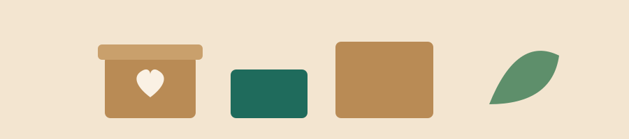

For shelters and food banks. Collect before the time shown. Showing today, 21 November 2026.

| Restaurant | Food | Meals | Collect before | Status | |
|---|---|---|---|---|---|
| The Royal Thali | Dal, rice, roti | 30 | 9:30 pm | Available | Claim |
| Golden Crust Bakery | Bread and buns | 45 | 8:00 pm | Available | Claim |
| Punjab Grill & Bistro | Veg biryani | 20 | 10:00 pm | Claimed | Seva Rasoi |
| Farm & Fork Kitchen | Salad and soup | 15 | 9:00 pm | Available | Claim |